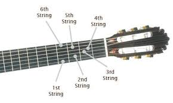

Shapes and Patterns
Here are the Shapes Patterns and Concepts I beleive every Intermediate Guitar Player Should Know
Prerequisites
You should know open chords. A, Am, C, D, Dm, E, Em, F, G.
Including 7th chords
A7, Am7, C7, D7, E7, Em7, G7
You should understand some basic strumming patterns and be able to play some songs all the way through
You should know string names.
2 More Prerecs Most People Dont Learn
String Numbers and up and down
Strings are numbered from the high E to the Low E. High E is 1

Up and Down
When a musician say up they mean higher in pitch, not higher as in closer to the ceiling.
Here We Go
Learn the Notes on The E and A Strings First
Learning the notes on the E and A string will be very useful when using barre chords, power chords, and scales. Also with the octive trick I am going to show you later you can know the name of any note on the fretboard instintaniously if you know the notes on the E and A string.

Memorize the notes on these two strings.
Barre Chords and the Caged System
The Caged System is simply getting the most out of barre chords.
Hack To Easily Learn The Fretboard
Here's the fastest way to learn the notes on the fretboard.
Step 1: Memorize the notes on the E and A string

Step 2: Memorize the Octive Shapes
These shapes always make an octive no matter what fret you start on.
Because of this the note under both fingers is the same.
The one on the higher string is simply an octive higher.

Step 3: If you dont know a note use an octive shape to trace it back to the E or A string
For example: You want to know what note is on the third fret of the D string. Use the first octive shape to trace it back.
Put your second finger on the third fret of the D string, and your first finger on the first fret of the low E string.

Bonus Tip: The E strings are tuned the same so the note on any fret on one E string is the same on the other E string. The 5th fret of both string is A, the 8th fret on both strings is C...
How to Get The Most Out of the Pentatonic Scale
What is the pentatonic scale
The pentatonic is a lead guitarists bread and butter.
It is often used to write riffs, licks, intros, outros, and solos.
Singers Often write melodies using this scale whether they know it or not.
There are two main types of pentatonic scale, the major pentatonic and the minor pentatonic.
They use the same shapes but the root notes are in different locations (i'll show you what this means later)
How to learn it
Learn this shape and how to use it in its major and minor forms
Learn this shape, how to connect it to the previous one, how to switch between them, and how to use them both in their major and minor forms. EX.
Learn the rest of the shapes and how to connect them all the way through
Learn other people solos riffs and licks to show you cool way to use it
check out these lead patterns
Major vs Minor and mixing
The Major Pentatoic is the major scale with no fourth and no 7th.
The minor Pentatonic is the Minor Scale with no second and no sixth
How does it work
This is not essential information but i'm putting here for anyone curious.
Triads
What is a triad?
A chord is just three notes right?
Here is every major chord shape, that does'nt repeat any notes, on the entire fretboard.

Here are the minor ones

Whatever note the root is on is the chord you are playing.
Playing the Changes
What is soloing by key
What is playing the changes
Arpeggios
What is an arpegggio.
An arpeggio is a scale made up only of chord tones.
An A major Arpeggio consists only of the notes in an A major schord. A C# and E
A CminMaj7 arpeggio contains the notes in a C minor major 7 chord: C Eb G and B
Sadly unlike the pentatonic scale the major and minor arpegio shapes are not identical, however some are similar.
Learn the major and minor shapes and how to connect them up and down the fretboard
This exercise changed my understanding of the guitar.
To do this exercise you must know: how to find every instance of a note on the fretboard using your octive shapes, the caged system, arpeggio shapes, and the pentatonic scale.
Each shape of each of these things correspond with a specific shape in all of the other things. EX.
This never changes. Doing this exercise will help you associate a chord shape with its relivant pentatonic and arrpeggio shape which will give you instant access to them anywhere on the fretboard.
Give a couple examples of using this association to access the different shapes when switching from playing lead to rythym